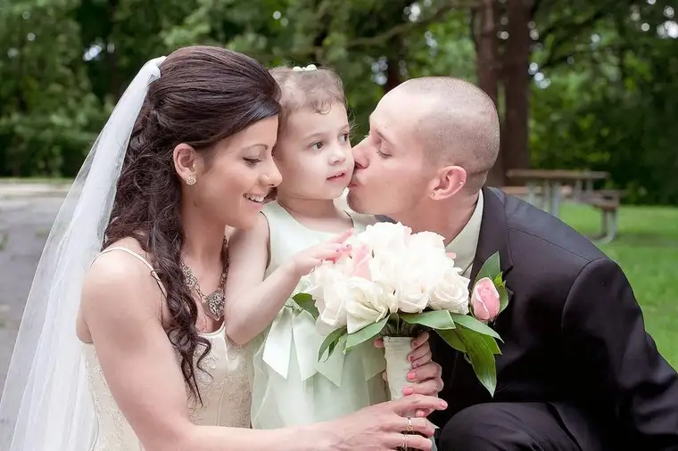

[For the sake of having a repository for my newspaper columns and articles, and allowing a second chance for those who missed them the first time, I reprint them here, with permission. The following ran in The Forum newspaper on Dec 6, 2014.]
 |
| James and Sawain Williams, June 2014/Special to the Forum |
{kind=link}
Faith conversations: Marriage gives couple a second chance
By Roxane B. Salonen
FARGO – On June 19, Sawain and James Williams looked up and saw nothing but gray skies.
“It rained the whole week leading up to it, and there was heavy drizzle all afternoon,” said their friend Gerri Leach.
Those preparing for the Williamses’ wedding had to “sweep the puddles off the concrete” at the main shelter at Trollwood Park in north Fargo, she said, where the couple would say their wedding vows.
But just after the nuptial exchange, the sun peeked through – perfectly timed for a marriage that had “second chance” with a divine brushstroke written all over it.
“It was like a dream come true. I felt like a princess,” said Sawain, 24, beaming in remembrance.
The couple’s 3-year-old daughter, Sonya, was the only family in attendance, and many who helped with setup were former jail inmates, or “returning citizens,” who had come straight from a treatment facility.
Yet angels surrounded, even if some wore slightly bent wings and halos.
“This really was the whole ministry and community celebrating with them what God had done in their lives,” said Leach, executive director of Jail Chaplains, which hosted the wedding in conjunction with the group’s annual Second Chances Picnic.
“It was so joyful, with everyone working together,” Leach said. “We had a praise band from Bethel (Church) there, and someone who loves to decorate cakes donated the cake, and another from Detroit Lakes (Minn.) donated the bridal gown.”
Leach had come up with the idea to combine the wedding and the event. After all, if not for Jail Chaplains, the union would not have been.
“If I hadn’t started going back to those programs,” James admitted, “I know I’d be back in jail or dead.”
Broken pasts
Both James’ and Sawain’s lives speak of broken pasts that have led to a hopeful future.
James, 30, grew up on a poverty-filled, drug-stricken reservation in Wisconsin to a police officer father who liked Jack Daniels and wrought anger onto his mother, according to James.
After a while, he just couldn’t bear it.
“I moved out at 13 onto the street,” James said, adding that he lived for months in an abandoned storage unit. “I joined gangs and sold drugs until I moved here.”
Things were so corrupt in Wisconsin, he said, that he even sold drugs to cops. “When I’ve gone back to visit, I’ve seen kids in Pampers hustling drugs there, too.”
Back then, God was the farthest thing from his mind. After all, if such a being did exist, James figured he’d never forgive someone who had seen and done the things he had.
At 23, James moved to Fargo to start over, but his bad habits followed him. After several stints behind bars, he eventually became acquainted with the faith-based programs at the Cass County Jail.
And for the first time, he began to feel hope and unconditional love.
“I knew I had to change and I couldn’t do it without God.”
After serving his time, James started working at a local restaurant, where he met Sawain. On the outside she was beautiful, but inside, wounds from her own past festered.
Originally from Kurdistan in northern Iraq, Sawain came to America at age 11 with her parents and two sisters, first to Connecticut, then Michigan, and eventually to Fargo when she was 18.
As a child, she said, she was beaten “like a man.” It was part of the culture. Even at school, the students were at risk of being slapped or hit with bats by their teachers.
“The first day of school here I said, ‘Mom, no one beat me up today at school. How amazing is that?’ ” Sawain said.
She was drawn to a Christian Bible study offered by Youth for Christ “because they had doughnuts,” and she liked doughnuts.
The experience piqued her interest in Jesus, she said, and when she moved into her first apartment, she found a single Bible in the otherwise empty rooms. “I started opening it up, and I prayed one night, ‘If you’re real, show me a sign.’ ”
That night, Sawain had a vivid dream about Jesus that overwhelmed her.
“That’s when I found God,” she said. “With my parents, I used to pray a lot in Islam and read the Koran and stuff, but Allah never reached out to me the way Jesus has.”
Relapses
Despite their newfound faith and bringing a daughter into the world, both James and Sawain experienced another major setback.
When James ended up incarcerated once more and lied about it, Sawain went off the rails, turning to drinking as a way to cope with her anger.
“He was going through his dark times, and it put both of us 10 steps back,” she said. “I started doubting God, blaming him for all this, but that wasn’t right.”
Eventually, their hearts were pierced again, in a good way.
“For me, it was the Holy Spirit,” Sawain said. “He opened my eyes. There were so many times when I doubted God, and then there would be a reminder, ‘You can’t go back, you can’t do this again.’ ”
James said it took nearly losing Sawain and Sonya to help him realize his old life needed to go.
“I even tried to commit suicide,” he said.
During his relapse, he ran into Mike Sonju from Jail Chaplains, and with his help, got turned back around.
“The Lord helped him see what it was like not having us and me what it was like not having them, and it opened up both of our eyes,” Sawain said. “I realized after going through what I did that my mistakes were just as bad as his mistakes.”
No longer dwelling on past hurts, Sawain said she wants Sonya to have the kind of childhood both she and James were denied.
“It’s definitely a God thing, what’s happened,” James said, as Sawain nodded.
“Their story really shows how we as a society can make a difference and stand in the gap for those who might by nature be disadvantaged,” Leach said. “That’s really what Jail Chaplains is all about.”